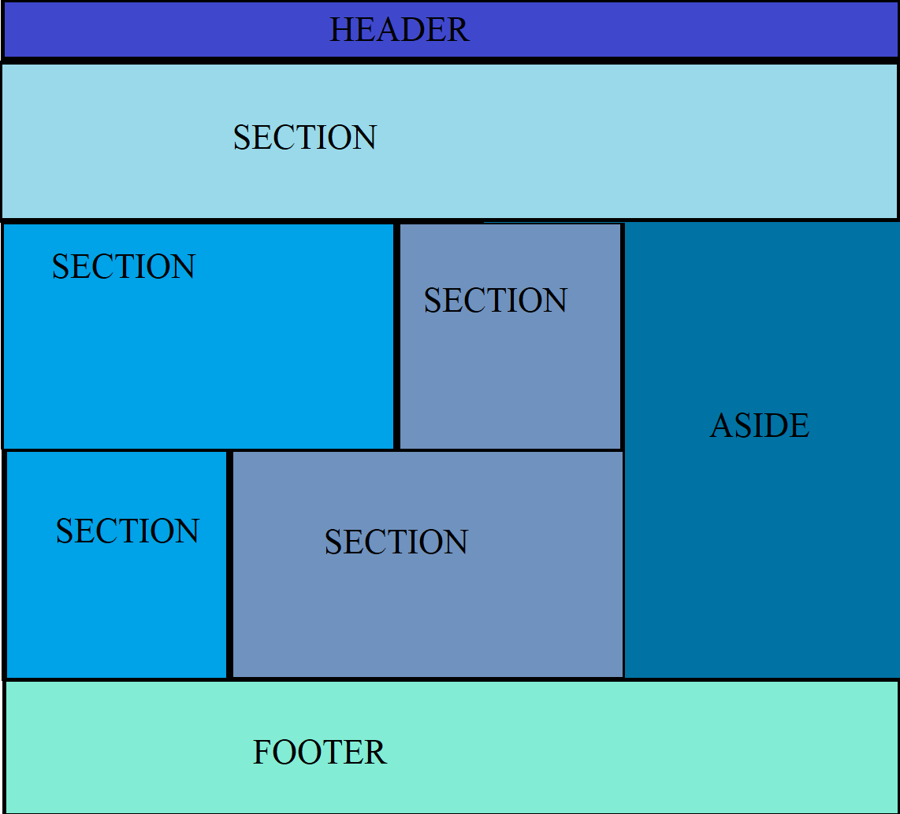
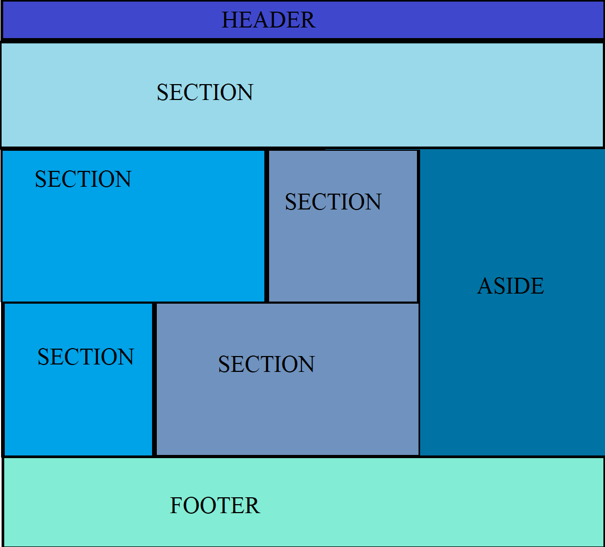
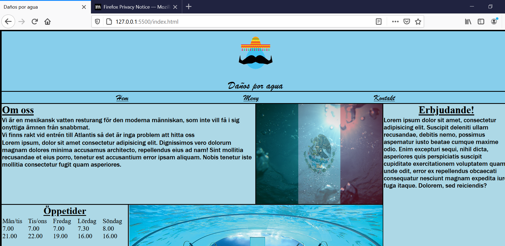
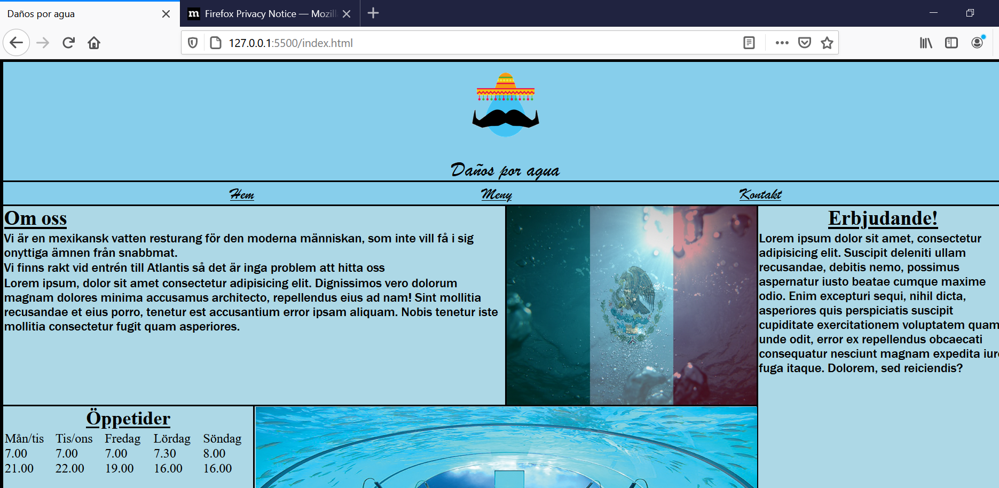

boxelement till grid

färdiga skissen för "hem" delen av sidan
boxelement till grid

färdiga skissen för "hem" delen av sidan
 Skissen för menyn på sidan
Skissen för menyn på sidan
 Skissen för kontakt på sidan
Skissen för kontakt på sidan

| Vecka | På lektionerna | Utanför lektionerna |
|---|---|---|
| 47 | Första skisserna och idégenerering. | Griden för alla del sidor |
| 48 | loggan samt bilder till sidan | inte särkskillt mycket då jag har andra skol grejer att jobba på |
| 49 | HÄR TOGS MYCKET AV MITT ARBETE PÅ DE TRE SIDORNA BORT AV GRID | Valde att fokusera på mitt andra skolarbeta dessa två veckorna samt hade motivationen försvunnit när github förstörde men jag planerade istället hur jag skulle göra mitt arbete under den sista veckan när jag faktiskt var klar med allt annat skol arbete. |
| 50 | Började faktiskt arbeta igen på det jag ville ha på sidan | andra skolarbeten |
 Jag testade i firefox och det funkade exakt lika bra som i chrome. 
Jag testade sedan i microsoft edge där det faktiskt gick lite annorlunda, då mina länkar i nav taggen flyttade till vänster sidan istället för mitten.
Jag testade i firefox och det funkade exakt lika bra som i chrome. 
Jag testade sedan i microsoft edge där det faktiskt gick lite annorlunda, då mina länkar i nav taggen flyttade till vänster sidan istället för mitten.  Detta fixade jag genom att uppdatera browsern då det sedan funkade galant! inget problem med själva hemsidan.
Detta fixade jag genom att uppdatera browsern då det sedan funkade galant! inget problem med själva hemsidan.  Uppgifts beskrivningen sa dessutom att vi inte skulle göra för mobilen utan för desktop.
Valideringen av Html bestod nästan bara av error gällande namnen av bilderna jag hade i dokumenten då de hade "space" istället för ett _ som hade varit mer korrekt, detta korigerades. (Inte för bilderna i dockumentatioen dock för där krävdes inte det.)
Valideringen av css gick bra, bara några onödiga rader kod som jag tog bort. Den ansåg att 100wh inte var en korrekt linje kod men det är det vi lärt oss på lektionerna så jag lämande den då det passade sidan bra.
Jag valde redan inann jag testade färgerna färger som skulle vara mjuka och inte jobbiga på ögonen, ljus blå och skyblue med svart text.
Detta gick hur bra som helst på contrast checker såklart och jag är nöjd med färgvalet.
Uppgifts beskrivningen sa dessutom att vi inte skulle göra för mobilen utan för desktop.
Valideringen av Html bestod nästan bara av error gällande namnen av bilderna jag hade i dokumenten då de hade "space" istället för ett _ som hade varit mer korrekt, detta korigerades. (Inte för bilderna i dockumentatioen dock för där krävdes inte det.)
Valideringen av css gick bra, bara några onödiga rader kod som jag tog bort. Den ansåg att 100wh inte var en korrekt linje kod men det är det vi lärt oss på lektionerna så jag lämande den då det passade sidan bra.
Jag valde redan inann jag testade färgerna färger som skulle vara mjuka och inte jobbiga på ögonen, ljus blå och skyblue med svart text.
Detta gick hur bra som helst på contrast checker såklart och jag är nöjd med färgvalet.